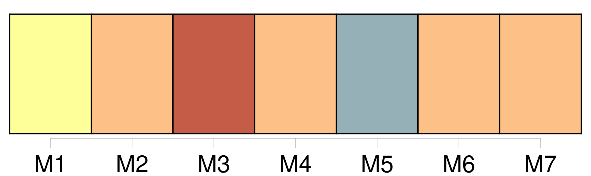

Longueur nb maillons : 35 mentions |
 |
Au premier rang de ces rares courtisans de l’ infortune était [La Rochefoucauld] , tout jeune encore, et [qui] , plein des sentimens que [son] père [lui] avait inspirés contre Richelieu, en débutant dans le monde [embrassa] d’ abord le parti des mécontens et la cause d’ Anne d’ Autriche. [Lui -même] a raconté quel agrément [il] trouvait alors à servir une reine sans crédit, mais environnée de femmes charmantes, et quelle liaison [il] forma avec Mlle de Hautefort, dont [il] célèbre la surprenante beauté, ajoutant, comme s’ [il] avait peur de la compromettre, qu’ elle avait beaucoup de vertu. Nous pouvons écarter le voile de ce langage incertain, et nous ne voyons pas pourquoi [La Rochefoucauld] , si peu réservé, hélas!! sur un point bien autrement délicat, [montre] ici quelque embarras à nous dire qu’ [il] devint amoureux de la belle Marie. C’ est peut-être qu’ [il] eût fallu avouer que, loin d’ être accueillie, cette passion dut se borner à une adoration respectueuse, selon les mœurs de la galanterie du temps ou plutôt selon le goût particulier de l’ héroïne. [La Rochefoucauld] aima Mlle de Hautefort sans oser le lui dire ; mais quelque temps après, étant à l’ armée et à la veille d’ une bataille, [il] alla trouver le marquis de Hautefort avec lequel [il] servait, lui fit confidence de [sa] passion, et lui [donna] une lettre pour sa sœur, en lui faisant promettre que, s’ il périssait dans le combat, il la lui remettrait et lui dirait de sa part ce qu’ [il] ne lui avait jamais dit, et que, s’ [il] n’ était pas tué, il [lui] rendrait [sa] lettre à [lui -même] et [lui] garderait fidèlement [son] secret. [1 phrases]
Ce n’ est pas ici d’ ailleurs le temps de parler de [ses] conquêtes ; celui où nous en sommes arrivés n’ était pas la saison des amours, et des choses plus sérieuses et presque tragiques se passaient dans l’ intérieur de la reine. [8 phrases] C’ est alors, si on en croit [La Rochefoucauld] , que la reine, dans les angoisses de sa première terreur, se croyant menacée d’ être répudiée, déchue de tout droit, enfermée dans quelque couvent ou même dans le château du Havre, qui était à Richelieu, lui aurait proposé de l’ enlever, elle et Mlle de Hautefort, et de les conduire à Bruxelles, proposition trop extravagante pour avoir été faite sérieusement, et que [La Rochefoucauld] ne rapporte sans doute que pour peindre le danger du moment et aussi pour relever [son] importance. [38 phrases]
On redoubla de sévérité envers la reine ; [La Rochefoucauld] , [que] Mme de Chevreuse avait vu un moment en passant à Verteil pour [lui] demander des chevaux, [fut] mis quelques jours en prison, et on ne sait trop comment la chose aurait tourné, si La Porte, en ayant l’ air de céder à l’ ordre officiel que la reine lui envoya de tout dire, n’ eût admirablement confirmé les déclarations de sa maîtresse dans la mesure concertée, et par là persuadé au cardinal et au roi que toute cette affaire n’ était pas aussi importante qu’ ils l’ avaient jugé d’ abord. [18 phrases] Il avait fini par pénétrer jusque dans l’ intérieur d’ Anne d’ Autriche, en gagnant une de ses filles d’ honneur, cette jeune, belle et spirituelle Mlle de Chémerault dont [La Rochefoucauld] fait un si vif éloge. |
|
Il est possible de télécharger la ressource sur la page Ortolang |
Si vous avez des questions ou vous voyez des erreurs, merci d'envoyer un mail à silvia.federzoni89@gmail.com |